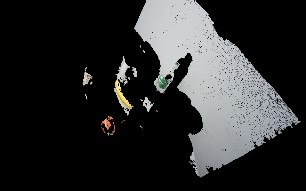
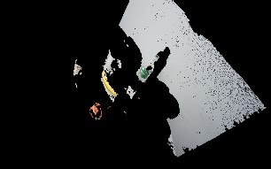

Демонстрационные примеры
Пример использования аугментации изображений
Модуль включает три основных этапа обработки данных: загрузку изображений, указание методов аугментации, сохранение результатов преобразования.
На первом этапе осуществляется загрузка входных изображений в вектор с использованием функции cv::imread.
std::vector<cv::Mat> inputImagesAugmetation(10);
inputImagesAugmetation[0] = cv::imread("files\\img0.jpg", cv::IMREAD_COLOR);
inputImagesAugmetation[1] = cv::imread("files\\img1.jpg", cv::IMREAD_COLOR);
...
inputImagesAugmetation[9] = cv::imread("files\\img9.jpg", cv::IMREAD_COLOR);
На этапе задания методов аугментации задаются названия методов, которые будут применяться к входным изображениям. В качестве методов преобразования могут выступать: поворот изображения на 45, 90, 270 или 315 градусов; зеркальное отображение по горизонтали, вертикали или по обоим направлениям. Ниже приведены методы аугментации изображений:
std::vector<mrcv::AUGMENTATION_METHOD> augmetationMethod = {
mrcv::AUGMENTATION_METHOD::ROTATE_IMAGE_90,
mrcv::AUGMENTATION_METHOD::FLIP_HORIZONTAL,
mrcv::AUGMENTATION_METHOD::FLIP_VERTICAL,
mrcv::AUGMENTATION_METHOD::ROTATE_IMAGE_45,
mrcv::AUGMENTATION_METHOD::ROTATE_IMAGE_315,
mrcv::AUGMENTATION_METHOD::ROTATE_IMAGE_270,
mrcv::AUGMENTATION_METHOD::FLIP_HORIZONTAL_AND_VERTICAL};
Далее осуществляется вызов функции аугментации в формате
int state = mrcv::augmetation(inputImagesAugmetation, outputImagesAugmetation, augmetationMethod);
После выполнения всех операций, модифицированные изображения сохраняются на диск с использованием функции cv::imwrite(ss.str(), resultImage)
Результат работы функции аугментации :


{kind=link}
Пример использования кластеризации
Реализует алгоритмы кластеризации 3D-точек на основе данных стереокамер.
Загрузка данных
Загружает данные для кластеризации из файла.
void mrcv::DenseStereo::loadDataFromFile(const std::string& filename)
Выполнение кластеризации
Выполняет кластеризацию загруженных данных.
void mrcv::DenseStereo::makeClustering()
Пример использования модуля работы с YOLOv5
Генерация конфигурационного файла для YOLOv5s с 80 классами представлена ниже
try
{
mrcv::YOLOv5GenerateHyperparameters(mrcv::YOLOv5Model::YOLOv5s,
640, 640, "yolov5s-hyp.yaml", 80);
}
catch (const std::exception &ex)
{
std::cerr << "Error: " << ex.what() << std::endl;
}
При успешной генерации без исключений, содержимое созданного конфигурационного файла yolov5s-hyp.yaml приведено ниже:
weight_decay: 0.00050000000000000001
box: 0.075000000000000011
cls: 0.52500000000000002
cls_pw: 1
obj: 1
obj_pw: 1
anchor_t: 4
fl_gamma: 0.17004397181410924
Здесь можно заметить обозначенные ранее параметры, которые необходимы для обучения моделей детекторов и классификаторов YOLOv5.
Пример использования детектирования объектов
Реализует функционал для автоматического обучения детектора объектов.
Инициализация детектора
Инициализирует детектор с заданными параметрами.
void mrcv::Detector::Initialize(
int device,
int width,
int height,
const std::string& classesFile
)
Автоматическое обучение
Выполняет автоматическое обучение модели детектора.
void mrcv::Detector::AutoTrain(
const std::string& datasetPath,
const std::string& imageExtension,
const std::vector<int>& epochs,
const std::vector<int>& batchSizes,
const std::vector<float>& learningRates,
const std::string& pretrainedModel,
const std::string& outputModel
)
Пример использования предобработки изображений
Для подготовки входных параметров функции предобработки preprocessingImage() производится загрузка исходного изображения:
cv::Mat imageIn;
cv::Mat imageOut;
imageIn = cv::imread("./files/seabed.png", cv::IMREAD_COLOR);
imageOut = imageIn.clone();
mrcv::writeLog("\t imageIn channels = " + std::to_string(imageIn.channels()));
Формируется список применяемых методов предобработки:
std::vector<mrcv::METOD_IMAGE_PERPROCESSIN> metodImagePerProcessinBrightnessContrast = {
mrcv::METOD_IMAGE_PERPROCESSIN::NOISE_FILTERING_01_MEDIAN_FILTER,
mrcv::METOD_IMAGE_PERPROCESSIN::BALANCE_CONTRAST_10_LAB_CLAHE,
mrcv::METOD_IMAGE_PERPROCESSIN::SHARPENING_02,
mrcv::METOD_IMAGE_PERPROCESSIN::BRIGHTNESS_LEVEL_DOWN,
mrcv::METOD_IMAGE_PERPROCESSIN::NONE,
mrcv::METOD_IMAGE_PERPROCESSIN::CORRECTION_GEOMETRIC_DEFORMATION,
};
Далее, применяется функция предобработки:
int state = mrcv::preprocessingImage(imageOut, metodImagePerProcessin, "./files/fileCameraParameters.xml");
Сохранение результата в файл:
cv::String imageOutputFilePath = "./files/outImages/test.png";
cv::imwrite(imageOutputFilePath, imageOut);
mrcv::writeLog("\t результат преодобработки сохранён: " + imageOutputFilePath);
Отображение результатов на экране:
double CoefShowWindow = 0.5;
cv::resize(imageIn, imageIn, cv::Size(double(imageIn.cols * CoefShowWindow),
double(imageIn.rows * CoefShowWindow)), 0, 0, cv::INTER_LINEAR);
cv::resize(imageOut, imageOut, cv::Size(double(imageOut.cols * CoefShowWindow),
double(imageOut.rows * CoefShowWindow)), 0, 0, cv::INTER_LINEAR);
cv::namedWindow("imageIn", cv::WINDOW_AUTOSIZE);
imshow("imageIn", imageIn);
cv::namedWindow("imageOut", cv::WINDOW_AUTOSIZE);
imshow("imageOut", imageOut);
cv::waitKey(0);
Результаты предобработки подводных изображений:

Пример фрагмента log-файла во время запуска примера:
16:59:43 | INFO | === НОВЫЙ ЗАПУСК ===
16:59:43 | INFO | загружено изображение: ./files/img02.jfif :: 960x600x3
16:59:43 | INFO | imageIn.channels = 3
16:59:43 | INFO | NOISE_FILTERING_01_MEDIAN_FILTER, state = 0
16:59:43 | INFO | BALANCE_CONTRAST_10_LAB_CLAHE, state = 0
16:59:43 | INFO | SHARPENING_02, state = 0
16:59:43 | INFO | BRIGHTNESS_LEVEL_DOWN, state = 0
16:59:43 | INFO | CORRECTION_GEOMETRIC_DEFORMATION, state = 0
16:59:43 | INFO | Предобработка изображения завершена (успешно)
16:59:43 | INFO | результат предобработки сохранён: ./files/img02.jfif
Пример использования модуля определения курса объекта
ship.bmp – кадр видеоряда с объектом интереса на изображении;
ship.onnx – обученная модель в формате YOLO5;
ship.names – текстовый файл с именами классов объектов интереса.
Создание экземпляра класса осуществляется с помощью вызова конструктора:
mrcv::ObjCourse *objcourse = new mrcv::ObjCourse(modelPath.u8string(), classPath.u8string());
В качестве входных данных конструктор принимает полный путь к модели, полный путь к файлу с классами модели и размеры детектора.
Тестирование проводилось на синтетическом изображении — модели кадра видеопотока, содержащего объект интереса.
Режим отображения меток используется только в режиме отладки при включенном флаге IS_DEBUG_LOG_ENABLED.
Результат работы детектора:

Для выполнения основных функций модуля используются вызовы методов класса ObjCourse, как показано ниже.
Подразумевается, что тестовое изображение предварительно загружено в переменную cv::Mat frameShip.
// Подсчет объектов
int objCount = objcourse->getObjectCount(frameShip);
// Расчет курса
float objAngle = objcourse->getObjectCourse(frameShip, 640, 80);
Метод getObjectCount принимает на вход кадр видеофрейма в формате cv::Mat
и возвращает количество найденных объектов.
Метод getObjectCourse принимает кадр видеофрейма, разрешение камеры по горизонтали (в пикселях) и угол обзора камеры,
возвращая угловую поправку на текущий курс с учетом знака смещения.
Пример использования модуля 3D сцены
L1000.bmp, R1000.bmp – набор исходных изображений;
(66a)_(960p)_NewCamStereoModule_Air.xml – xml-файл с параметрами камеры.
Подготовка входных данных
Для подготовки входных параметров функции readCameraStereoParametrsFromFile()
необходимо загрузить исходные изображения и параметры камеры.
Также необходимо провести инициализацию параметров, как указано в примере использования.
Основная функция
Для определения координат 3D точек в сегментах идентифицированных объектов и восстановления 3D сцены по двумерным изображениям используется функция:
state = mrcv::find3dPointsInObjectsSegments(
inputImageCamera01, inputImageCamera02, cameraParameters,
inputImageCamera01Remap, inputImageCamera02Remap,
settingsMetodDisparity, disparityMap, points3D, replyMasks,
outputImage, outputImage3dSceene, parameters3dSceene,
filePathModelYoloNeuralNet, filePathClasses,
limitOutPoints, limitsOutlierArea
);
Результаты работы


 

{kind=link}

Фрагмент лог-файла
Ниже приведён фрагмент из лог-файла библиотеки во время запуска примера использования:
14:51:16 | INFO | === НОВЫЙ ЗАПУСК ===
14:51:16 | INFO | 1. Загрузка изображений из файла (успешно)
14:51:16 | INFO | загружено изображение: ./files/L1000.bmp :: 960x600x3
14:51:16 | INFO | загружено изображение: ./files/R1000.bmp :: 960x600x3
14:51:16 | INFO | 2. Загрузка параметров стереокамеры из файла (успешно)
14:51:16 | INFO | A1. Выравнивание изображения камера 01 (успешно)
14:51:16 | INFO | A2. Облако 3D точек сцены найдено (успешно)
14:51:16 | INFO | points3D.numPoints0 = 312718
14:51:16 | INFO | points3D.numPoints = 8018
...
14:51:17 | INFO | 4.8 Вывод проекции 3D сцены на экран (успешно)